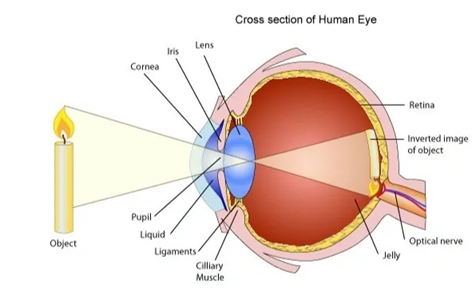
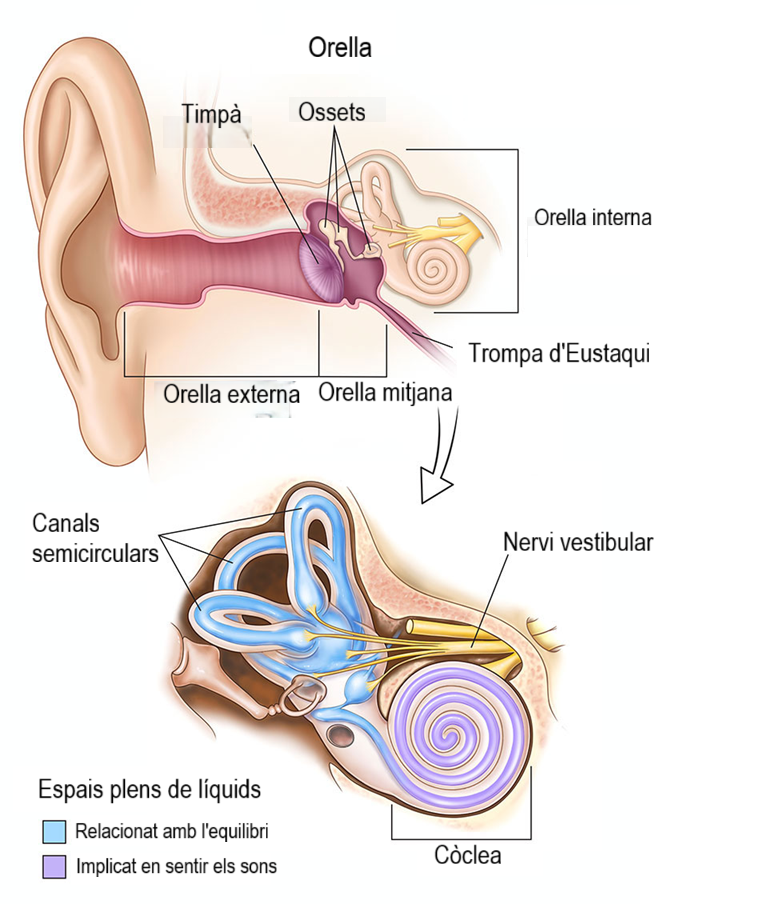
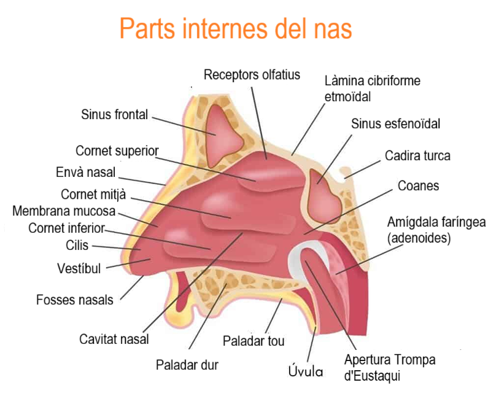
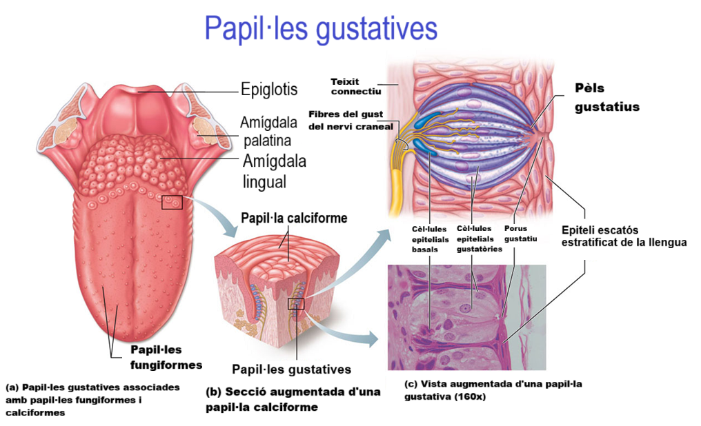
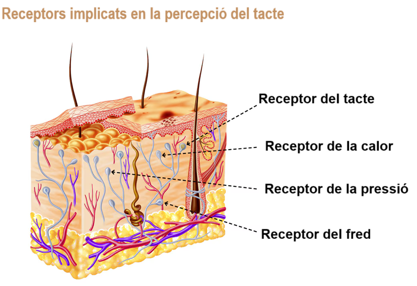
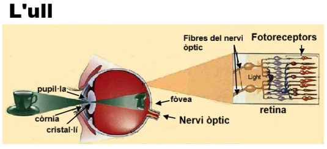
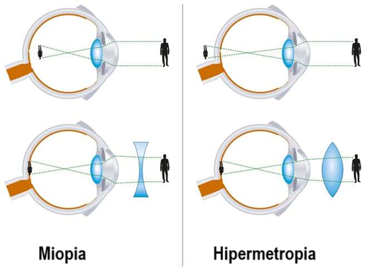

Els òrgans dels sentits són els òrgans sensorials externs que obtenen informació sobre el que passa al nostre entorn i la transmeten als centres nerviosos, principalment a l'encèfal.
Conceptes bàsics sobre la sang
Els òrgans dels sentits
La vista
| Els ulls són els òrgans del sentit de la vista. La llum entra a l'ull a través de la pupil·la i el cristal·lí, una lent que projecta la imatge sobre la retina. La informació de la imatge s'envia a l'encèfal a través del nervi òptic. |  |
La oïda
|  | Les orelles són els òrgans del sentit de l'oïda. El so entra per l'orella externa i xoca amb el timpà que, a través dels ossets de l'orella mitjana, transmet les vibracions a l'orella interna. La informació del so rebuda per l'orella interna és enviada a l'encèfal a través del nervi auditiu. |
L'olfacte
| El nas és l'òrgan del sentit de l'olfacte. Està format per dues cavitats que comuniquen amb l'exterior. A la part superior de cada cavitat hi ha la pituïtària, una membrana que capta les olors i envia la informació a l'encèfal pel nervi de l'olfacte. |  |
El gust
|  | La llengua és l'òrgan del sentit del gust. A la llengua es troben les papil·les gustatives, que recullen els sabors dolç, amarg, salat i àcid dels aliments i envien la informació a l'encèfal a través del nervi del gust. |
El tacte
| La pell és l'òrgan del sentit del tacte. Està formada per dues capes: l'exterior o epidermis i la interior o derma. A la derma hi ha les glàndules sudorípares i els receptors sensorials de la pressió i la temperatura. La informació que capta és enviada, a través dels nervis, a la medul·la espinal i a l'encèfal. |  |
Mecanismes i defectes de la visió
El mecanisme de la visió és força complex. Vegem com funciona i els seus defectes:
Els mecanismes de la visió.
| Els rajos de llum que projecta la tassa arriben a l'ull. |  | El cristal·lí desvia els rajos que, després de creuar-se, projecten una imatge més petita i invertida sobre la retina. |
Els defectes de la visió
Algunes persones, però, tenen defectes de visió. Alguns d'aquests defectes són:
|  | |
| Es produeix quan l'ull és més llarg del normal. La imatge no es forma a la retina sinó més endavant. Els miops no hi veuen bé de lluny. | Es produeix quan l'ull és més curt del normal. La imatge no es forma sobre la retina sinó més endarrere. Els hipermetrops no hi veuen bé de prop. |
Altres defectes òptics són l'astigmatisme i l'estrabisme. Tots es corregeixen amb ulleres.
| Els òrgans dels sentits de la vista, l'oïda, l'olfacte, el gust i el tacte capten informació del nostre entorn i l'envien als centres nerviosos. |
Llicenciat sota la Llicència Creative Commons Reconeixement CompartirIgual 4.0